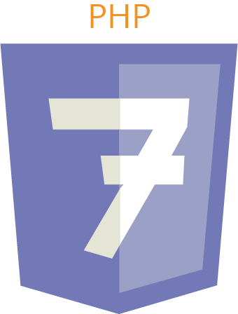
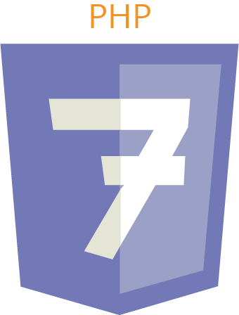

Description du projet

Le rêve de Julia est un projet qui a été réalisé au semestre 3 de ma deuxième année de DUT Mmi. En équipe de
trois et à la demande d’un commanditaire, nous devions réaliser un site internet
communautaire porté sur la pathologie du cancer.
Dans l’équipe, j’occupais le poste de graphiste et de chef de projet. Il était donc dans mon travail de
maintenir une bonne communication au sein du groupe, gérer les tâches de chacun dans le temps qui nous était
impartis et de prendre les rendez-vous avec notre commanditaire afin de répondre au mieux à ses
attentes.
Ce site internet comprenait plusieurs pages aidant à symboliser son aspect communautaire. Des pages
informatives sur tous les aspects du cancer, des récits des malades et de leurs proches, des anecdotes, un
forum, des pages conseils et bien-être, et enfin, une carte où les utilisateurs pouvaient trouver des lieux
utils. Chaque utilisateur pouvait bénéficier d’une page profil en s’inscrivant sur le site.


 
